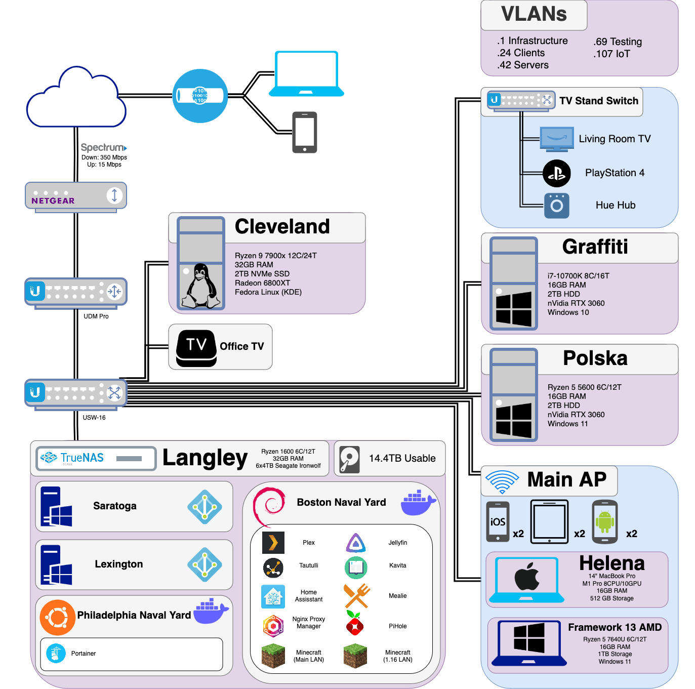

Kyle Offutt
Hi, I'm Kyle
Welcome to my Homelab
My Homelab
Homelab Services


Plex/Jellyfin
Media server services which allow for streaming of home media. Plex is the main server for many. Jellyfin is the open-source alternative.

Tatulli
Tatulli is a logging software which tracks usage data for Plex. I use it to track how little my family uses Plex and how often I play the same album again and again and again and again...

Home Assistant
An open-source local smart home controller. Instead of relying on Google Home, Amazon Alexa, or Apple Homekit, which all require always online functionality, Home Assistant makes management local.
Mealie
A webapp which hosts recipies. Save cookbooks, family recipies, and random online recipies to a local database which can be queried. Also included is meal planning and grocery lists.

Nginx Proxy Manager
A reverse proxy which allows the association of IP's and Ports to FQDN's. NPM is one of the easiest to manage reverse proxies for beginners.

PiHole
DNS sinkholes are mostly used for adblocking but can also for network security and parental controls. By blocking of explicit or malicious sites. PiHole also can operate as local DNS allowing association of an IP with a FQDN.

Minecraft
Everyone's favorite block-based creative outlet. I host two instances for family: Our first server-based LAN and our original 1.16 LAN.